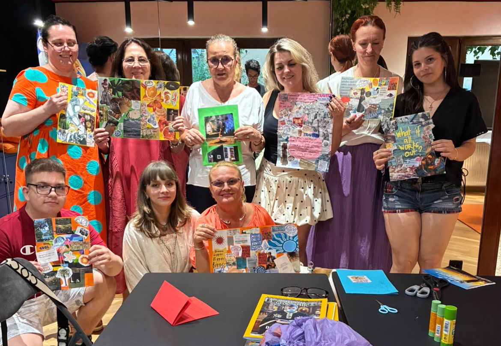
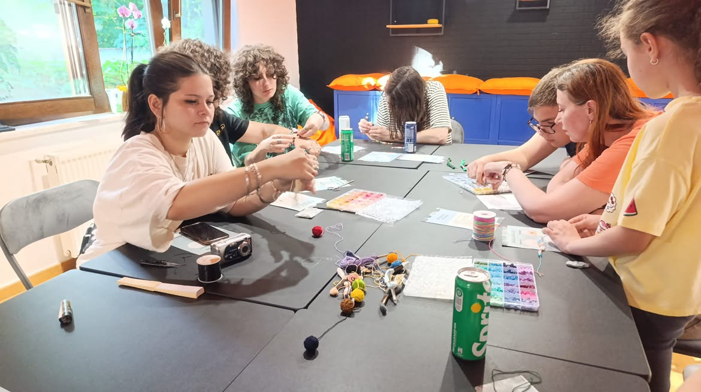
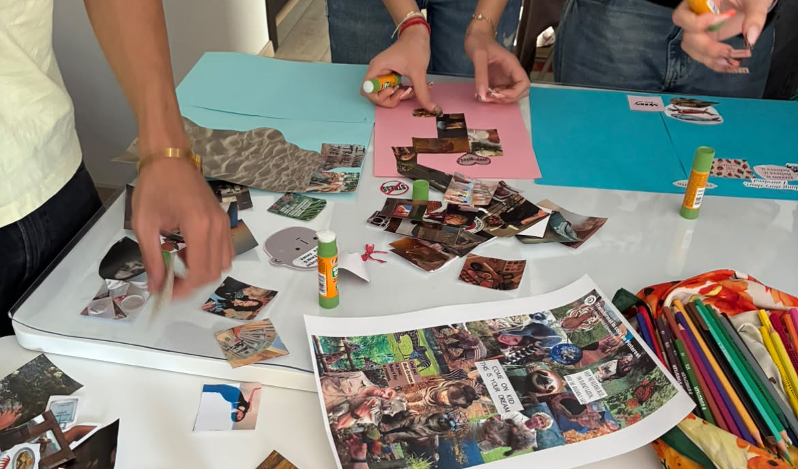

Atelierele sunt una dintre modalitățile mele preferate de a mă conecta cu clienții mei. Tehnicile terapeutice pe care le folosesc în cadrul atelierelor sunt importante, dar nu ele fac diferența.
Comunitatea creată din oameni gata să se cunoască este ceea ce mă face să revin la atelierele mele. Creșterea emoțională are nevoie de suport emoțional și fizic.
Lucrez prin tehnici de psihoterapie, art-terapie și somatică pentru a le oferi o experiență autentică și transformatoare persoanelor care aleg să se descopere.
Și fii sigur că, în urma fiecărui atelier pe care îl realizez, vei pleca acasă cu un mic reminder al acestei perioade din viața ta.

Vision Board cu Adulți
Un atelier creativ în care îți clarifici obiectivele personale și profesionale pentru perioada următoare, folosind colaje vizuale.
În cadrul atelierelor de vision board, pun accent pe comunitate și pe obiectivele fiecărei persoane.
Pe lângă realizarea vision boardurilor propriu-zise, lucrez mult cu tehnici terapeutice pentru a scoate la suprafață valorile și visele clienților mei.
Totodată, prin intermediul comunității, clienții mei se pot conecta cu cei din jur. Atunci când nu lucrăm în grupul mare, îmi place să lucrez în diade, astfel încât fiecare persoană să își poată explora unicitatea alături de cineva.

Atelier De Făcut Brățări
Un atelier practic și relaxant, în care lucrul manual devine un pretext pentru a încetini ritmul și a-ți acorda timp doar ție.
Atelierul de realizare a brățărilor se axează pe identificarea resurselor personale și pe revenirea în prezent.
În momentele grele, este important să ne amintim pe ce ne putem baza. Și ce mod mai bun de a ne reaminti acest lucru decât printr-o brățară pe care o putem lua cu noi peste tot?
Fiecare charm este ales cu un scop și reprezintă ceva aparte pentru fiecare persoană.

Atelierul De Vision Boards Cu Elevi
Pentru clasa a XII-a. Un atelier dedicat elevilor aflați în pragul unor decizii importante — facultate, carieră, următorii pași după liceu. Prin exercițiul de vision board, elevii își clarifică prioritățile și câștigă mai multă încredere în alegerile pe care urmează să le facă.